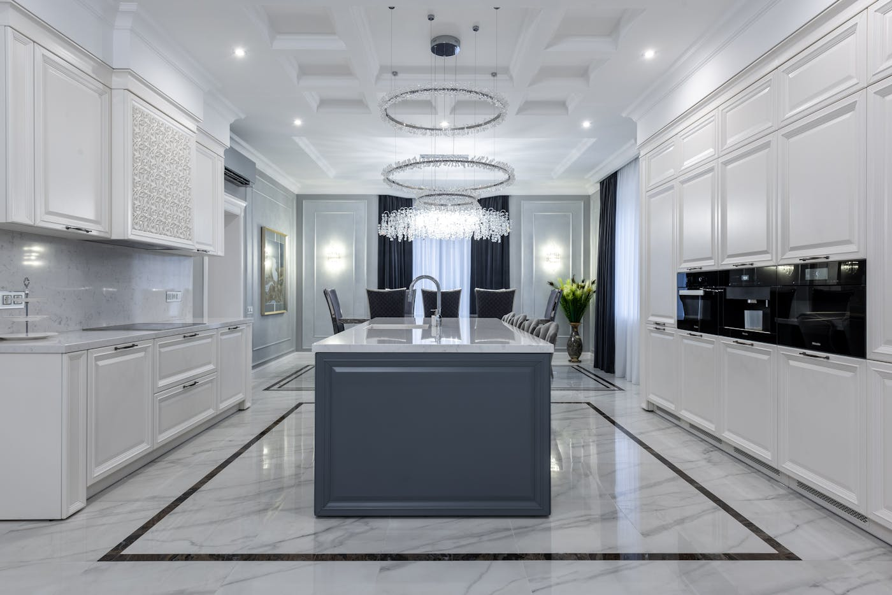

Quick answer: The Home Building Act 1989 (NSW) is the principal legislation governing residential building work in New South Wales. It applies to any residential construction contract valued above $20,000 — or any work involving structural changes to a residential property regardless of value. Under the Act, builders must hold a current NSW contractor licence, provide a written contract, maintain statutory warranty obligations (6 years for major defects, 2 years for all other defects), and hold Home Building Compensation Fund (HBCF) insurance before work begins. When disputes arise, NSW Fair Trading provides free conciliation; the NSW Civil and Administrative Tribunal (NCAT) handles matters that conciliation does not resolve.
The Home Building Act 1989 is, in theory, what you read before signing a residential building contract. In practice, it is what you search at 11pm when the contract arrives and something in clause 7 looks off. Both approaches work. The first is considerably less stressful.
[Right. Straight face now.] The Act has teeth. Understanding what it requires — and what it does not — matters well before you hand over a 10 per cent deposit on a $1.5M build.
- What is the Home Building Act 1989 NSW?
- When does the Act apply to your build?
- NSW builder licensing requirements
- What must be in a residential building contract
- Statutory warranties: what your builder guarantees by law
- Home Building Compensation Fund insurance
- Dispute resolution: from Fair Trading to NCAT
- What the 2026 building reforms mean right now
- When the Home Building Act won’t protect you
- Six questions to ask before contracts are signed
- FAQ
What Is the Home Building Act 1989 NSW?
The Home Building Act 1989 (NSW) is the primary piece of legislation governing residential construction work in New South Wales. It sets out the legal rights and responsibilities of homeowners, licensed builders, subcontractors, and developers involved in residential building projects across the state.
The Act is administered jointly by NSW Fair Trading and the Building Commission NSW. It covers five core areas: the licensing of builders and tradespeople, written contract requirements for residential work, statutory warranties implied automatically into every qualifying contract, mandatory home building compensation insurance, and dispute resolution procedures between homeowners and builders.
The Act covers residential work only — houses, townhouses, duplexes, granny flats, and strata units. Commercial construction and strata remediation work fall under separate regulatory frameworks. When a project crosses residential and commercial uses, the classification of the primary use generally determines which rules apply, though specialist advice is worth obtaining for mixed-use sites.
The Act has been amended several times since 1989, most significantly by the Home Building Legislation Amendment Act 2023, which expanded building inspection powers and introduced anti-phoenixing laws targeting builders who wind up insolvent entities and reopen under new names to avoid their warranty obligations.
When Does the Home Building Act Apply to Your Build?
The Act applies to residential building work in NSW where the contract value exceeds $20,000, or where the work involves structural changes to residential premises regardless of value. For owner-builders managing their own construction, the licensing threshold is lower: $10,000 in contract value triggers the relevant provisions.
Work covered by the Act includes construction of new homes, knockdown rebuilds, extensions and additions to existing homes, swimming pool construction, garage and carport construction, granny flat construction, and alteration or repair of any existing residential structure above the threshold. If you are building a new home in Sydney, the Act applies to your project without exception.
Some work sits outside the Act’s scope: minor cosmetic renovations below the $20,000 threshold, certain commercial fitouts, and specialist building categories with their own licensing frameworks — electrical, plumbing, and gas fitting have separate requirements under the Act but are typically administered through their dedicated licensing streams.
The threshold figure of $20,000 is the contract value, not the value of the work actually performed. If a contract is structured below the threshold but the reasonable value of the work is above it, the Act’s protections may still apply. A builder suggesting a split contract to avoid the threshold is suggesting something that does not legally remove the obligations the Act creates.
NSW Builder Licensing Requirements
The Home Building Act requires that anyone contracting to carry out residential building work in NSW above the applicable threshold holds a current contractor licence issued by NSW Fair Trading. A builder operating without a licence cannot legally enter into a residential building contract — and any contract they do enter is unenforceable against the homeowner, though the homeowner retains the right to enforce it against the unlicensed builder.
Two licence categories apply to most residential construction:
- Contractor Licence (Builder): required for any company or sole trader contracting to carry out residential building work above the threshold.
- Supervisor Certificate: required for the individual who supervises the work on site, even where the contracting entity is a licensed company. The company holds the contractor licence; the person actually running your site must hold a current supervisor certificate.
Verifying a builder’s licence takes two minutes on the NSW Fair Trading licence register. Search by licence number or company name, confirm the licence is current and in the contracting entity’s name, check the expiry date, and confirm no suspensions or conditions are attached. A licence number provided verbally at a meeting is not evidence of a current licence. Check the register directly before any money changes hands.
Our broader guide on how to choose a custom home builder covers what else to look for beyond the licence check — track record, references, financial capacity, and the practical questions that tell you more than any credential.
What Must Be in a Residential Building Contract
For contracts above $20,000, the Home Building Act prescribes what a written contract must contain. The absence of required elements does not automatically void the contract, but it shifts certain risks to the builder and removes some of their contractual protections.
A compliant residential building contract must include:
- The full legal names of all parties — you as the homeowner, and the builder or contracting entity
- The builder’s contractor licence number
- The date the contract is made
- A description of the work to be done, with plans and specifications attached or referenced
- The contract price, or the method for calculating it where a fixed price is not possible at signing
- Commencement and completion dates, or a method for determining these
- Procedures for handling variations to the scope
- The home building compensation insurance details applicable to the project
On deposits: the Act caps the deposit at 10 per cent of the total contract price for contracts where work has not yet commenced. Progress payment schedules must be tied to completed stages of work — not to calendar dates chosen at the builder’s convenience.
On variations: any change to the scope of work — whether requested by you or proposed by the builder — must be agreed and documented in writing before the additional work proceeds. A variation accepted verbally is a variation that is difficult to price, attribute, or dispute later. Insist on written variation orders for every change to the original scope, and ensure each is signed before work commences. This is one of the more practical protections in the Act and one of the most frequently set aside in practice.

Photo via Pexels
Statutory Warranties: What Your Builder Guarantees by Law
This is the part of the Home Building Act most homeowners discover only when they need it. It is worth understanding before the contract is signed rather than after the defects appear.
Section 18B of the Act implies six statutory warranties into every residential building contract in NSW. These warranties are automatic. They cannot be removed, reduced, or waived by any term in the contract — any clause that purports to do so is void. They apply regardless of what the builder’s standard contract says or does not say.
The six warranties are:
- Work will be done with due care and skill
- Work will be done in accordance with the plans and specifications in the contract
- Materials used will be good, suitable for the purpose they are used for, and new (unless the contract expressly states otherwise)
- Work will be reasonably fit for the purpose it is intended to serve
- All laws and legal requirements applicable to the work will be complied with
- Work will be completed by the date or within the period specified in the contract, or within a reasonable time if no date is stated
These warranties are separate from any additional express warranties a builder may offer. They sit beneath the contract as a legal floor that the contract cannot reduce.
Warranty Periods
The warranty period for major defects is 6 years from the date of practical completion. For all other defects, the period is 2 years from practical completion. If a defect first becomes apparent in the final 6 months of either warranty period, proceedings may be commenced for a further 6 months after the period ends.
A major defect under the Act is a defect in a major element of the building — foundations, load-bearing walls, floor systems, external cladding, roof structure, or fire-rated construction — that prevents the building from being used for its intended purpose, or is likely to cause its partial or full structural failure. The classification matters.
A cracked render on an external wall that is cosmetically poor but does not affect structure is a 2-year defect. A cracked footing that allows water ingress and threatens structural integrity is a 6-year major defect. Whether a defect falls into one category or the other determines when you must act, and getting that classification wrong can leave you outside the limitation period.
Photo via Pexels
Home Building Compensation Fund Insurance
The Home Building Compensation Fund (HBCF) — previously known as home warranty insurance — is mandatory for any residential building contract in NSW valued above $20,000. Before a builder can legally commence work, they must obtain HBCF cover and provide you with a copy of the insurance certificate. If they cannot produce one before work starts, work should not start.
The HBCF protects homeowners if their licensed builder:
- Becomes insolvent (enters administration, liquidation, or bankruptcy)
- Dies
- Disappears or cannot be located
- Fails to comply with a tribunal or court order requiring them to fix defective or incomplete work
As of 2026, HBCF cover is capped at $340,000 for defective work and $340,000 for incomplete work under a single policy. On a $2M custom home build, this means the HBCF covers a fraction of the project value. It is a backstop against the worst outcomes, not a full guarantee. This is one reason that selecting a licensed builder with a verifiable track record and demonstrated financial stability matters independently of the insurance requirement.
A builder who suggests HBCF is unnecessary, offers to waive it, or indicates the project can proceed without it is either telling you the contract value is genuinely below $20,000 — possible for small works, worth verifying in writing — or that they cannot obtain cover. An inability to obtain HBCF is a significant red flag. The scheme’s underwriter assesses builder eligibility, and a builder the scheme declines to insure is one the scheme has assessed as elevated risk. Act accordingly.
Photo via Pexels
Dispute Resolution: From Fair Trading to NCAT
When something goes wrong — defective work, an incomplete build, an unresolved variation dispute — the Home Building Act sets out the resolution pathway. Understanding it before you need it saves time when you do.
Step 1: NSW Fair Trading
Lodge a complaint with NSW Fair Trading online, by phone, or in person. A Fair Trading Building Dispute Inspector will assess the complaint and attempt conciliation — an informal process in which both parties negotiate a resolution with a mediator. This service is free. The majority of home building disputes are resolved at conciliation, which is one reason to use the process rather than going straight to lawyers.
Step 2: NCAT (NSW Civil and Administrative Tribunal)
If conciliation fails or is not appropriate for the dispute, Fair Trading will advise on further options, including applying to NCAT’s Consumer and Commercial Division (Home Building List). A hearing before a tribunal member can result in orders requiring the builder to fix defects, complete work, pay compensation, or a combination. NCAT can make orders up to $500,000 without mandatory legal representation, though complex matters often involve lawyers on both sides regardless.
Most defect disputes that cannot be resolved at conciliation settle before the NCAT hearing date, once both parties have formal statements of evidence in front of them. The process is adversarial enough to concentrate minds without the cost of full court proceedings.
Step 3: The Courts
For amounts above NCAT’s jurisdiction or for complex contractual disputes involving large sums, the NSW District Court (amounts up to $750,000) or Supreme Court (above $750,000) is the appropriate forum. At this level, legal representation is standard and costs are material. Disputes at this scale typically involve years of elapsed time and legal costs that can rival the cost of the remediation itself.
The practical implication: the Home Building Act’s dispute resolution framework works best when invoked early, with clear documentation. Defects should be recorded in writing as they appear, variation disputes should be escalated in writing rather than managed by phone call, and the Fair Trading conciliation pathway should be used before the dispute becomes entrenched. For more on what to check before you sign, see our guide on how to choose a builder.
What the 2026 Building Reforms Mean Right Now
This is the topic most existing guides on the Home Building Act do not yet address, and it is directly relevant to anyone building in New South Wales in 2026.
The NSW Government introduced the Building (Approvals and Practitioners) Bill 2026, which is intended to replace the Home Building Act 1989 with unified legislation covering both residential and commercial construction. The reform aims to consolidate the current fragmented regulatory framework, strengthen the powers of the Building Commission NSW to take disciplinary action against practitioners, and simplify dispute resolution so that homeowners can resolve building disputes more quickly and without mandatory court proceedings.
Key changes proposed in the 2026 Bill include: clearer practitioner licensing categories across residential and commercial work, enhanced audit and inspection powers for the Building Commission, stronger anti-phoenixing provisions, and new pathways for rapid resolution of defect complaints without requiring NCAT proceedings.
Until the new legislation commences, the Home Building Act 1989 remains in full force. Contracts signed now and projects underway are governed by the current Act. The statutory warranty periods, HBCF requirements, and dispute resolution pathways described in this article all apply to your build today. Watch for any announced commencement date and confirm with your builder how transitional provisions will affect your contract.
The NSW Planning Portal publishes updates to building legislation and is the primary reference point for regulatory changes affecting residential construction in New South Wales.
When the Home Building Act Won’t Protect You
This section is the one most legal guides skip. It is, arguably, the most useful one.
The Act does not protect you from a builder who delivers exactly what the contract specifies, even if you later decide you do not want it. Statutory warranties cover defective and incomplete work. They do not cover design regret, specification changes you wish you had made before the contract was signed, or the gap between what you imagined and what the contract documents actually said. The time to fix a specification is before the contract is executed, not after the slab is poured.
The Act does not protect you from delays caused by your own decisions. Late approval of builder-requested variations, slow responses to requests for information, or scope changes initiated mid-construction are contractual matters in which the homeowner is the party causing delay. In these cases, the builder may have grounds to extend the completion date and claim for additional costs. The 6-year major defect warranty does not apply to a project that is late because the homeowner changed the kitchen layout after framing.
The Act does not protect you effectively against a builder who is solvent but unresponsive. HBCF only activates if the builder is insolvent, dead, or has absconded. A builder who is trading normally but refuses to fix a defect requires the Fair Trading – NCAT pathway, which takes months. Having clear contractual provisions for urgent defect rectification — separate from and in addition to the statutory warranty mechanism — is worth insisting on at contract stage for any project of scale.
The most effective protection under the Home Building Act starts before signing. A licensed builder with a verifiable completion record, confirmed HBCF cover before work begins, documented variation orders for every scope change, and a written defects liability process in the contract reduces the likelihood of needing any of these rights substantially. Our post on custom home builders in Sydney covers what to look for when choosing a builder for a significant residential project.
Six Questions to Ask Your Builder Before Contracts Are Signed
Do this before the first cheque, not after three good meetings have made you emotionally committed to the renders.
- Is your contractor licence current, and can I verify it directly on the NSW Fair Trading register before we proceed? Confirm the licence is in the contracting entity’s name, is current, and carries no suspensions or conditions. Do not accept a verbal confirmation. The register takes two minutes and is public.
- Who holds the supervisor certificate for this project, and how often will they be on site? The company holds the contractor licence; an individual must hold a current supervisor certificate to legally supervise the work. Know who that person is, verify their certificate separately, and understand their on-site schedule before the contract is signed.
- Do you have HBCF cover for this project, and will you provide the certificate before any deposit is paid? For any contract above $20,000, the answer must be yes. Ask for the certificate in advance, not on the day work starts.
- What is the variation procedure, and will all variations be priced in writing before work proceeds? Every project of any complexity generates variations. The Act requires them in writing, but confirming the builder’s actual process in advance — and putting it in the contract — removes ambiguity when variations arise mid-build.
- What is the defects liability process in your contracts? Statutory warranties exist by law, but the contract should also set out how defects identified at handover are logged, prioritised, and rectified. Ask to see the defects provisions in the draft contract before you sign.
- Can I speak with three recent clients whose projects were comparable in scope and budget? The right builder says yes without hesitation. If references require a conversation about whether they can be provided, that conversation is also informative. Six questions. Not an unreasonable ask for a contract valued above $1M.
FAQ
What does the Home Building Act NSW cover?
The Home Building Act 1989 NSW covers the licensing of builders and tradespeople, written contract requirements for residential work above $20,000, statutory warranties implied automatically into every qualifying contract, mandatory Home Building Compensation Fund (HBCF) insurance, and dispute resolution between homeowners and builders. It applies to houses, granny flats, townhouses, and apartments where the contract value exceeds $20,000 or involves structural changes to residential premises.
When does the Home Building Act apply in NSW?
The Act applies when a residential building contract in NSW exceeds $20,000 in value, or when the work involves structural changes to residential premises regardless of value. For owner-builders, the licensing threshold is $10,000. It covers new construction, knockdown rebuilds, extensions and additions, pool construction, and alterations to existing residential structures above the applicable threshold.
What are the statutory warranties under the Home Building Act?
Section 18B of the Home Building Act implies six automatic warranties into every residential building contract: work must be done with due care and skill; work must comply with the plans and specifications; materials must be new, good, and fit for purpose; work must be fit for its intended purpose; all applicable laws must be complied with; and work must be completed by the agreed date. These warranties cannot be removed or waived by any term in the contract.
How long are builder warranties in NSW?
The warranty period for major defects — defects in structural elements that threaten the integrity or use of the building — is 6 years from the date of practical completion. For all other defects, the warranty period is 2 years from practical completion. If a defect becomes apparent in the last 6 months of either warranty period, proceedings may be commenced within a further 6 months after the period ends.
What is the Home Building Compensation Fund (HBCF)?
The HBCF is mandatory insurance for every residential building contract in NSW valued above $20,000. It protects homeowners if their builder becomes insolvent, dies, disappears, or fails to comply with a tribunal order to rectify defective or incomplete work. As of 2026, cover is capped at $340,000 for defective work and $340,000 for incomplete work per policy. The builder must provide the insurance certificate before work commences.
How do I make a complaint about a builder in NSW?
Lodge a complaint with NSW Fair Trading online, by phone, or in person. Fair Trading will attempt conciliation between you and the builder through its Building Dispute Resolution program — a free service that resolves the majority of home building complaints. If conciliation fails, you can apply to the NSW Civil and Administrative Tribunal (NCAT), which can order defect rectification, completion of works, or monetary compensation up to $500,000.
What is the difference between a major defect and other defects?
A major defect under the Home Building Act is a defect in a major element of the building — foundations, load-bearing walls, external cladding, floor systems, roof structure, or fire-rated elements — that prevents the building from being used for its intended purpose or is likely to cause structural failure. Major defects carry a 6-year warranty period. All other defects — including poor finishes, cracked tiles, or faulty fixtures — carry a 2-year period.
Is the Home Building Act NSW being replaced?
Yes. The NSW Government introduced the Building (Approvals and Practitioners) Bill 2026, which is intended to replace the Home Building Act 1989 with unified legislation covering residential and commercial construction. The Bill strengthens Building Commission NSW enforcement powers and aims to simplify dispute resolution for homeowners. Until the new legislation formally commences, the Home Building Act 1989 remains in full force and governs all current residential building contracts.